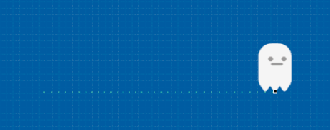
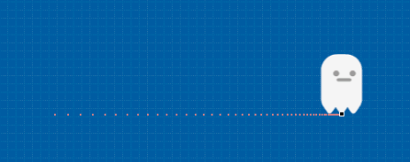
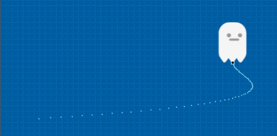
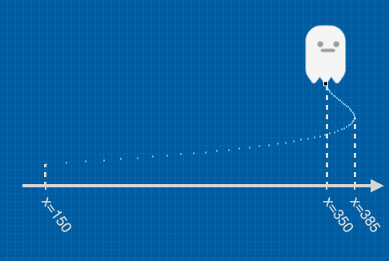
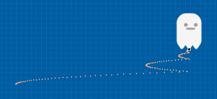
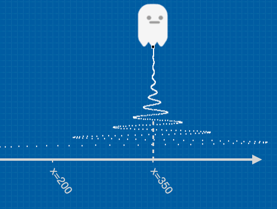
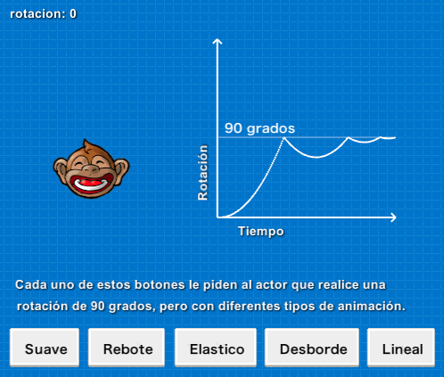
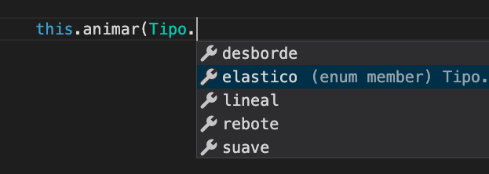

Todos los actores tienen una serie de propiedades como x, y, rotacion y transparencia. En total hay mas de 10 propiedades listas para modificar, tanto desde el editor como desde el código.
Ahora bien, si cambiamos progresivamente estas propiedades podemos lograr animaciones interesantes. Por ejemplo podríamos cambiar progresivamente la rotación de un actor para que parezca estar en movimiento así:
Y lo mismo con las otras propiedades, si queremos que un actor se mueva hacia la derecha de la pantalla podemos cambiar muchas veces su propiedad x para que parezca “moverse” hacia un costado de la pantalla.
Sin embargo, hacer animaciones cambiando propiedades una a una se puede volver tedioso si realmente queremos hacer animaciones completas, así que pilas tienen una forma de simplificar esto.
Todos los actores tienen una función llamada animar parar facilitar la creación de animaciones, o movimientos, mediante el cambio de propiedades de un actor.
Si queremos lograr que un actor gire infinitas veces como mostramos en la animación de más arriba podemos escribir lo siguiente:
La función this.animar iniciará una animación sobre las propiedades del actor. Primero espera dos argumentos:
Tipo.lineal, Tipo.desborde, Tipo.suave, Tipo.elastico, Tipo.rebote. Vamos a ver esto en la siguiente sección.5 veces, o como valor especial se puede colocar -1 para que la animación se haga por siembre.Lo siguiente que se coloca después de la llamada a this.animar() es una secuencia de animaciones a realizar.
Por ejemplo, en este ejemplo se le pide al actor que se mueva a la derecha, gire 180 grados y luego regrese al punto (0, 0) una vez:

Existen varias propiedades que se pueden animar, como la posición de los actores, la rotación, transparencia etc…
Para ver el listado completo de estas animaciones te recomiendo mirar la ayuda que te ofrece el editor justo después cerrar el paréntesis que inicia la animación:
Algunas animaciones esperan parámetros, como el valor esperado para la propiedad y la duración total de la animación, así que nuevamente ten en cuenta que el editor te ayudará a conocer los parámetros que espera cada una de las animaciones.
El primer argumento de la función this.animar pude ser uno de estos:
Tipo.linealTipo.suaveTipo.desbordeTipo.reboteTipo.elasticoAhora bien, ¿qué significan estos valores?, ¿En qué se diferencian?: Las animaciones son básicamente transformaciones que se le hacen a las propiedades a través del tiempo, así que estos tipos de animaciones se diferencian en cómo la animación progresará en el tiempo.
Veamos el tipo de animación Tipo.lineal primero, que es uno de los más sencillos:
Imagina que tenemos un actor y le pedimos hacer un movimiento en el eje x de forma lineal con este código:
Si dibujamos cómo se mueve un actor en el tiempo usando una animación de tipo lineal vamos a ver que el movimiento se hace de forma constante, avanzando siempre a la misma velocidad:

¿Y cómo son el resto de las animaciones?.
La animación de tipo suave es similar a la lineal, pero hace que el actor se mueva con cierta desaceleración:

Esto se puede notar porque los puntos por los que pasó el actor se ven cada vez más juntos.
La animación de tipo desborde superará el punto de llegada, pero retomará la posición para corregir el desvío.
Para que este gráfico se vea un poco mejor, se combinó con un movimiento vertical:

Observa como cerca del punto de llegada el personaje superó la coordenada 350, a la que le habíamos pedido que se mueva, pero suavemente retomó para corregir el desborde:

La animación de tipo rebote llegará al punto solicitado pero va a regresar y corregir la posición varias veces:

Es ideal para movimiento que aparenten ser mecánicos, como giros de engranajes o palancas.
Las animaciones elásticas son las más llamativas cuando se utilizan en movimientos y rotaciones:

Este tipo de animaciones también se ven muy bien cuando se aplican a escalas, por ejemplo si quieres hacer que un actor parezca “esponjoso” podrías lograrlo combinando dos animaciones así:
this.escala_x = 0.6;
this.escala_y = 1.4;
this.animar(Tipo.elastico, 1, 5).escalar_x_hasta(1);
this.animar(Tipo.elastico, 1, 5).escalar_y_hasta(1);
Una forma de ayudarte a reconocer los tipos de animaciones es probar el ejemplo “tipos de animación” de los ejemplos de pilas:

Sin embargo, mi recomendación es que pruebes qué tipo de animación funciona mejor en el juego que estés haciendo, recuerda que cuando escribas el código el propio editor te guiará por todas las opciones disponibles:
